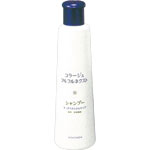
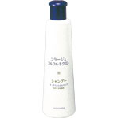

1．フケ・かゆみを防ぐ
抗真菌（抗カビ）成分ミコナゾール硝酸塩と抗酸化・殺菌成分オクトピロックスが、フケ原因菌（カビ）の増殖を抑え、フケ・かゆみを効果的に防ぎます。
2．頭皮環境を整える
抗酸化・殺菌成分オクトピロックスが頭皮の汗臭を防ぎ、清潔ですこやかな頭皮環境に整えます。
3．低刺激性・無香料・無色素・パッチテスト済み＊
＊すべての方に皮ふ刺激がないわけではありません。
豊かな泡立ちで頭皮・毛髪をやさしく洗浄します。泡切れが良く、きちんとすすげます。香料を含みませんので、香りのないシャンプーをお好みの方におすすめです。肌が敏感な方にもご使用いただけます。